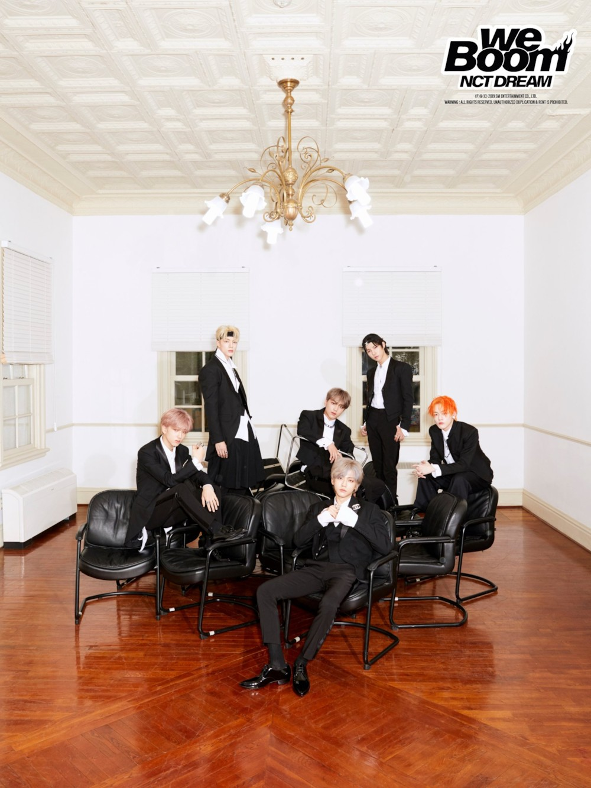

NCT DREAM은 SM엔터테인먼트 소속의 NCT의 세 번째 서브 그룹이다. NCT DREAM은 10대들로 이루어진 청소년 연합팀이며, 성인들에게는 힐링을, 청소년들에게는 꿈과 희망을 주는 것을 포부로 하는 그룹이다. 멤버들 중 한국 나이 기준으로 만 20세가 지나면 NCT DREAM을 졸업하는 로테이션 형식의 그룹이다.
데뷔 전 티저를 통해 SM Rookies 와 미키 마우스 클럽 에서 이미 공개된 한국인 멤버 지성, 제노, 재민, 그리고 NCT 127로 활동 중이던 마크, 해찬, 비공개 연습생이었던 천러, 런쥔이 공개되었다.
2016년 8월 25일 Chewing Gum으로《엠 카운트다운》에서 데뷔하였다.
드림듀스 1등 유력 후보. 전설의 '미라클'
지성-179.3cm 천러-178cm 재민-177cm 제노-177cm 해찬-173cm 런쥔-170cm